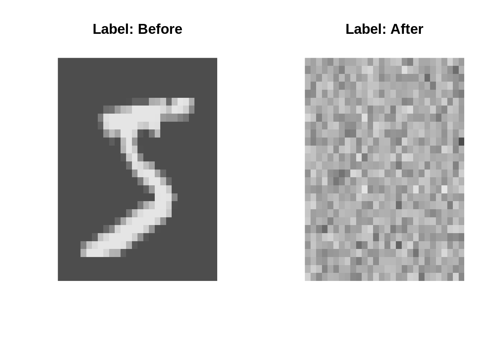
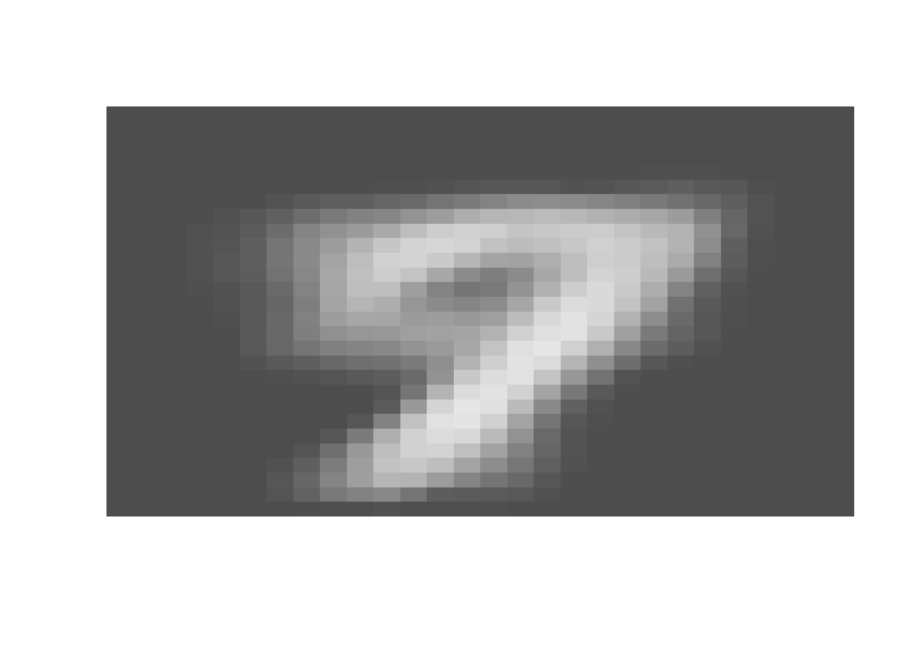
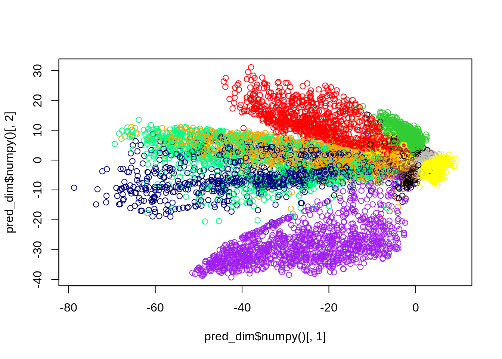
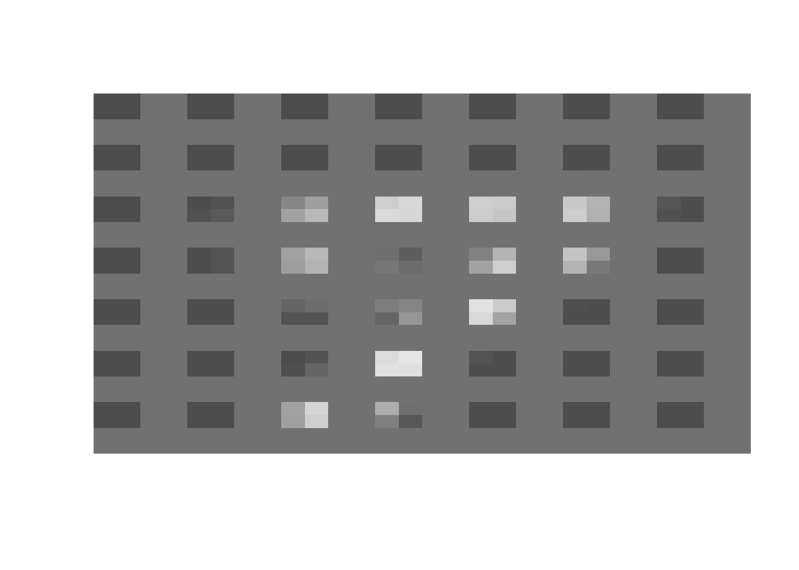
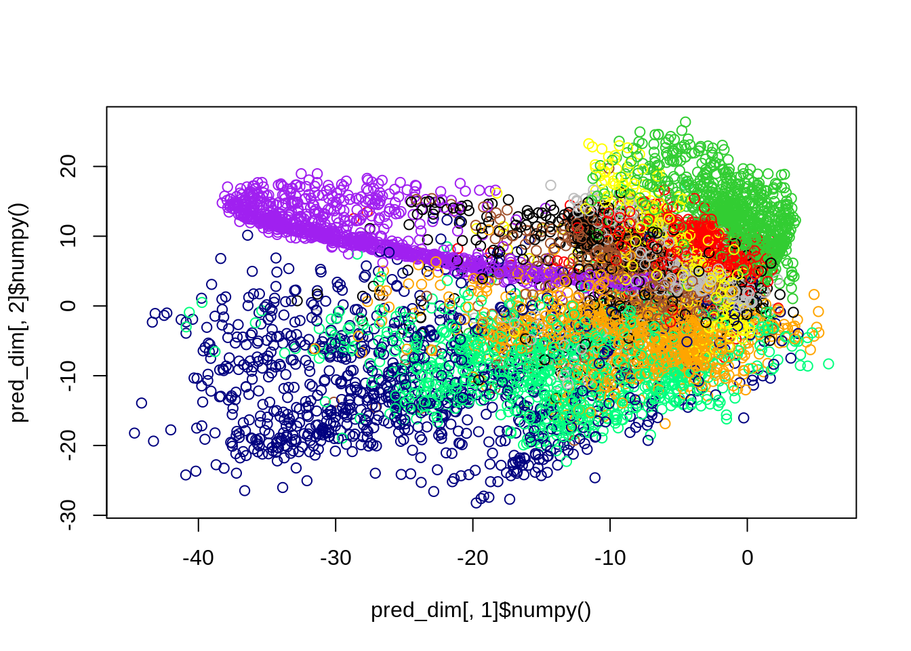
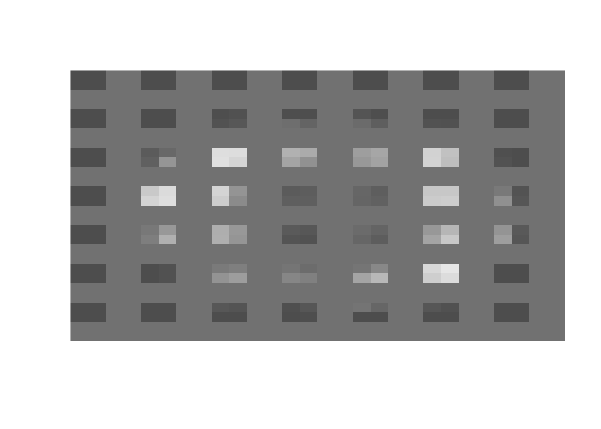
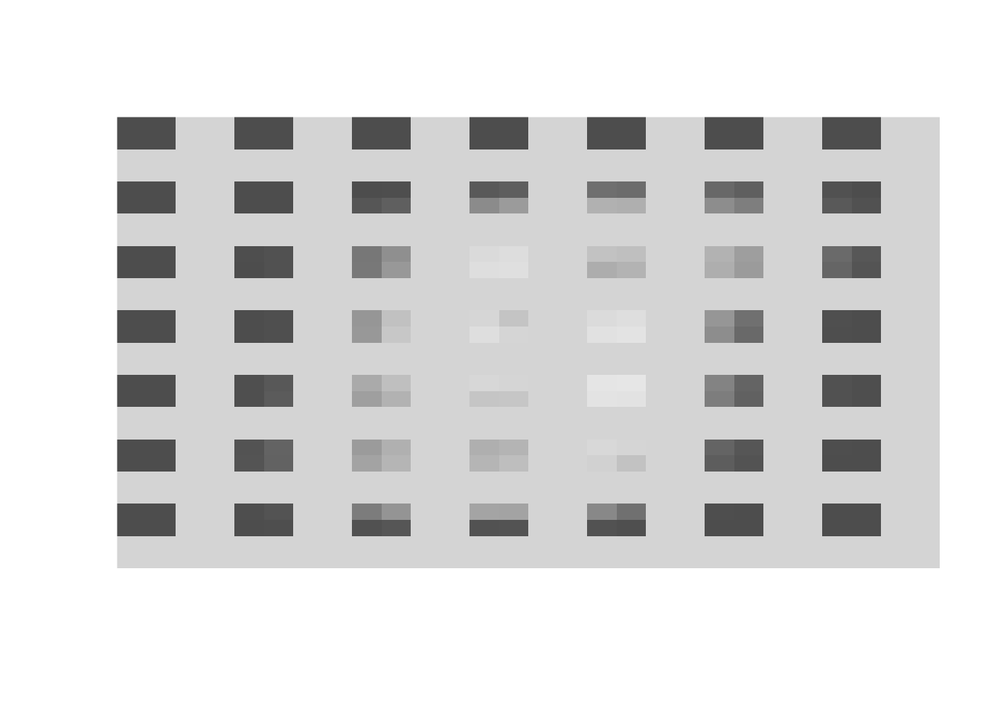
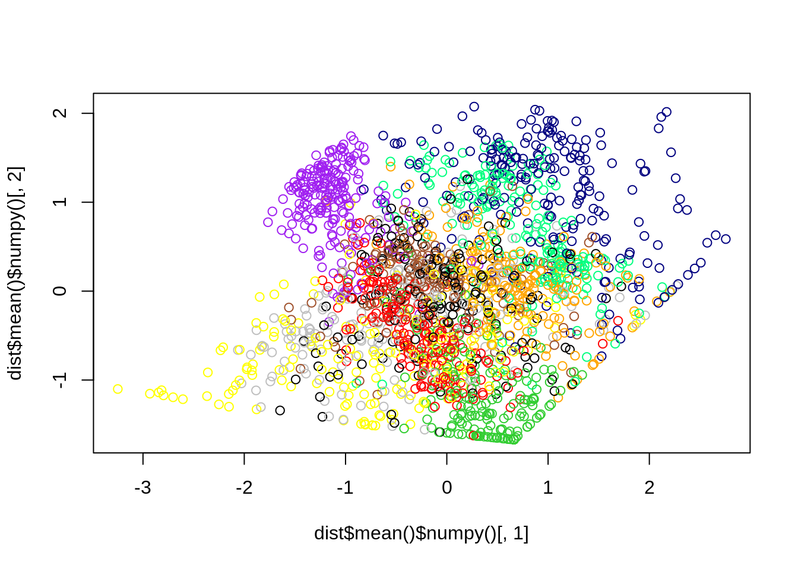

Model:
__________________________________________________________________________________________
Layer (type) Output Shape Param #
==========================================================================================
dense_2_input (InputLayer) [(None, 784)] 0
dense_2 (Dense) (None, 100) 78500
dense_1 (Dense) (None, 20) 2020
dense (Dense) (None, 2) 42
sequential_1 (Sequential) (None, 784) 81344
==========================================================================================
Total params: 161,906
Trainable params: 161,906
Non-trainable params: 0
__________________________________________________________________________________________
14 Autoencoder
Autoencoders (AE) can be used for unsupervised learning. The idea is similar to data compression: The first part of the network compresses (encodes) the data to a low dimensional space (e.g. 2-4 dimensions) and the second part of the network decompresses (decodes) and learns to reconstruct the data (think of a hourglass).
Why is this useful? The method is similar to a dimension reduction technique (e.g. PCA) but with the advantage that we don’t have to make any distributional assumptions (but see PCA). For instance, we could first train an autoencoder on genomic expression data with thousands of features, compress them into 2-4 dimensions, and then use them for clustering.
14.1 Autoencoder - Deep Neural Network MNIST
We now will write an autoencoder for the MNIST data set.
Let’s start with the (usual) MNIST example:
library(keras)
library(tensorflow)
data = keras::dataset_mnist()We don’t need the labels here, our images will be the inputs and at the same time the outputs of our final autoencoder.
rotate = function(x){ t(apply(x, 2, rev)) }
imgPlot = function(img, title = ""){
col = grey.colors(255)
if(title != ""){ main = paste0("Label: ", as.character(title)) }
else{ main = "" }
image(rotate(img), col = col, xlab = "", ylab = "", axes = FALSE, main = main)
}
train = data[[1]]
test = data[[2]]
train_x = array(train[[1]]/255, c(dim(train[[1]])[1], 784L))
test_x = array(test[[1]]/255, c(dim(test[[1]])[1], 784L))Our encoder: image (784 dimensions) \(\rightarrow\) 2 dimensions
down_size_model = keras_model_sequential()
down_size_model %>%
layer_dense(units = 100L, input_shape = c(784L), activation = "relu") %>%
layer_dense(units = 20L, activation = "relu") %>%
layer_dense(units = 2L, activation = "linear")Our decoder: 2 dimensions \(\rightarrow\) 784 dimensions (our image)
up_size_model = keras_model_sequential()
up_size_model %>%
layer_dense(units = 20L, input_shape = c(2L), activation = "relu") %>%
layer_dense(units = 100L, activation = "relu") %>%
layer_dense(units = 784L, activation = "sigmoid")We can use the non-sequential model type to connect the two models. (We did the same in the transfer learning chapter.)
autoencoder = keras_model(inputs = down_size_model$input,
outputs = up_size_model(down_size_model$output))
autoencoder$compile(loss = loss_binary_crossentropy,
optimizer = optimizer_adamax(0.01))
summary(autoencoder)We will now show an example of an image before and after the unfitted autoencoder, so we see that we have to train the autoencoder.
image = autoencoder(train_x[1,,drop = FALSE])
imgPlot(array(train_x[1,,drop = FALSE], c(28, 28)), title = "Before")
imgPlot(array(image$numpy(), c(28, 28)), title = "After")
Fit the autoencoder (inputs == outputs!):
library(tensorflow)
library(keras)
set_random_seed(123L, disable_gpu = FALSE) # Already sets R's random seed.
autoencoder %>%
fit(x = train_x, y = train_x, epochs = 5L, batch_size = 128L)Visualization of the latent variables:
pred_dim = down_size_model(test_x)
reconstr_pred = up_size_model(pred_dim)
imgPlot(array(reconstr_pred[10,]$numpy(), dim = c(28L, 28L)), title = "")
ownColors = c("limegreen", "purple", "yellow", "grey", "orange",
"black", "red", "navy", "sienna", "springgreen")
oldpar = par(mfrow = c(1, 1))
plot(pred_dim$numpy()[,1], pred_dim$numpy()[,2], col = ownColors[test[[2]]+1L])
The picture above shows the 2-dimensional encoded values of the numbers in the MNIST data set and the number they are depicting via the respective color.
14.2 Autoencoder - MNIST Convolutional Neural Networks
We can also use convolutional neural networks instead or on the side of deep neural networks: Prepare data:
data = tf$keras$datasets$mnist$load_data()
train = data[[1]]
train_x = array(train[[1]]/255, c(dim(train[[1]]), 1L))
test_x = array(data[[2]][[1]]/255, c(dim(data[[2]][[1]]/255), 1L))Then define the downsize model:
down_size_model = keras_model_sequential()
down_size_model %>%
layer_conv_2d(filters = 16L, activation = "relu", kernel_size = c(3L, 3L), input_shape = c(28L, 28L, 1L), padding = "same") %>%
layer_max_pooling_2d(, padding = "same") %>%
layer_conv_2d(filters = 8L, activation = "relu", kernel_size = c(3L,3L), padding = "same") %>%
layer_max_pooling_2d(, padding = "same") %>%
layer_conv_2d(filters = 8L, activation = "relu", kernel_size = c(3L,3L), padding = "same") %>%
layer_max_pooling_2d(, padding = "same") %>%
layer_flatten() %>%
layer_dense(units = 2L, activation = "linear")Define the upsize model:
up_size_model = keras_model_sequential()
up_size_model %>%
layer_dense(units = 128L, activation = "relu", input_shape = c(2L)) %>%
layer_reshape(target_shape = c(4L, 4L, 8L)) %>%
layer_conv_2d(filters = 8L, activation = "relu", kernel_size = c(3L,3L), padding = "same") %>%
layer_upsampling_2d() %>%
layer_conv_2d(filters = 8L, activation = "relu", kernel_size = c(3L,3L), padding = "same") %>%
layer_upsampling_2d() %>%
layer_conv_2d(filters = 16L, activation = "relu", kernel_size = c(3L,3L)) %>%
layer_upsampling_2d() %>%
layer_conv_2d(filters = 1, activation = "sigmoid", kernel_size = c(3L,3L), padding = "same")Combine the two models and fit it:
library(tensorflow)
library(keras)
set_random_seed(321L, disable_gpu = FALSE) # Already sets R's random seed.
autoencoder = tf$keras$models$Model(inputs = down_size_model$input,
outputs = up_size_model(down_size_model$output))
autoencoder %>% compile(loss = loss_binary_crossentropy,
optimizer = optimizer_rmsprop(0.001))
autoencoder %>% fit(x = tf$constant(train_x), y = tf$constant(train_x),
epochs = 50L, batch_size = 64L)Test it:
pred_dim = down_size_model(tf$constant(test_x, "float32"))
reconstr_pred = autoencoder(tf$constant(test_x, "float32"))
imgPlot(reconstr_pred[10,,,]$numpy()[,,1])
ownColors = c("limegreen", "purple", "yellow", "grey", "orange",
"black", "red", "navy", "sienna", "springgreen")
plot(pred_dim[,1]$numpy(), pred_dim[,2]$numpy(), col = ownColors[test[[2]]+1L])
## Generate new images!
new = matrix(c(10, 10), 1, 2)
imgPlot(array(up_size_model(new)$numpy(), c(28L, 28L)))
new = matrix(c(5, 5), 1, 2)
imgPlot(array(up_size_model(new)$numpy(), c(28L, 28L)))
14.3 Variational Autoencoder (VAE)
The difference between a variational and a normal autoencoder is that a variational autoencoder assumes a distribution for the latent variables (latent variables cannot be observed and are composed of other variables) and the parameters of this distribution are learned. Thus new objects can be generated by inserting valid (!) (with regard to the assumed distribution) “seeds” to the decoder. To achieve the property that more or less randomly chosen points in the low dimensional latent space are meaningful and yield suitable results after decoding, the latent space/training process must be regularized. In this process, the input to the VAE is encoded to a distribution in the latent space rather than a single point.
For building variational autoencoders, we will use TensorFlow probability, but first, we need to split the data again.
library(tfprobability)
data = tf$keras$datasets$mnist$load_data()
train = data[[1]]
train_x = array(train[[1]]/255, c(dim(train[[1]]), 1L))We will use TensorFlow probability to define priors for our latent variables.
library(tfprobability)
tfp = reticulate::import("tensorflow_probability")Build the two networks:
encoded = 2L
prior = tfd_independent(tfd_normal(c(0.0, 0.0), 1.0), 1L)
up_size_model = keras_model_sequential()
up_size_model %>%
layer_dense(units = 128L, activation = "relu", input_shape = c(2L)) %>%
layer_reshape(target_shape = c(4L, 4L, 8L)) %>%
layer_conv_2d(filters = 8L, activation = "relu", kernel_size = c(3L,3L), padding = "same") %>%
layer_upsampling_2d() %>%
layer_conv_2d(filters = 8L, activation = "relu", kernel_size = c(3L,3L), padding = "same") %>%
layer_upsampling_2d() %>%
layer_conv_2d(filters = 16L, activation = "relu", kernel_size = c(3L,3L)) %>%
layer_upsampling_2d() %>%
layer_conv_2d(filters = 1, activation = "sigmoid", kernel_size = c(3L,3L), padding = "same")
down_size_model = keras_model_sequential()
down_size_model %>%
layer_conv_2d(filters = 16L, activation = "relu", kernel_size = c(3L, 3L), input_shape = c(28L, 28L, 1L), padding = "same") %>%
layer_max_pooling_2d(, padding = "same") %>%
layer_conv_2d(filters = 8L, activation = "relu", kernel_size = c(3L,3L), padding = "same") %>%
layer_max_pooling_2d(, padding = "same") %>%
layer_conv_2d(filters = 8L, activation = "relu", kernel_size = c(3L,3L), padding = "same") %>%
layer_max_pooling_2d(, padding = "same") %>%
layer_flatten() %>%
layer_dense(units = 4L, activation = "linear") %>%
layer_independent_normal(2L,
activity_regularizer =
tfp$layers$KLDivergenceRegularizer(distribution_b = prior))
VAE = keras_model(inputs = down_size_model$inputs,
outputs = up_size_model(down_size_model$outputs))Compile and fit model:
library(tensorflow)
library(keras)
set_random_seed(321L, disable_gpu = FALSE) # Already sets R's random seed.
loss_binary = function(true, pred){
return(loss_binary_crossentropy(true, pred) * 28.0 * 28.0)
}
VAE %>% compile(loss = loss_binary, optimizer = optimizer_adamax())
VAE %>% fit(train_x, train_x, epochs = 50L)And show that it works:
dist = down_size_model(train_x[1:2000,,,,drop = FALSE])
images = up_size_model(dist$sample()[1:5,])
ownColors = c("limegreen", "purple", "yellow", "grey", "orange",
"black", "red", "navy", "sienna", "springgreen")
oldpar = par(mfrow = c(1, 1))
imgPlot(images[1,,,1]$numpy())
plot(dist$mean()$numpy()[,1], dist$mean()$numpy()[,2], col = ownColors[train[[2]]+1L])